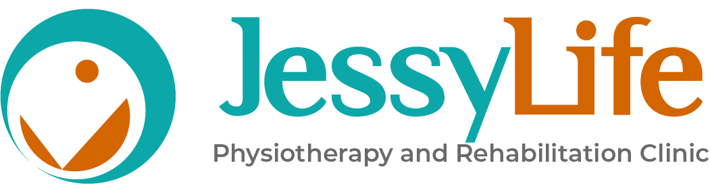

JESSYLIFE PATIENT STORIES
Behind every rehabilitation journey is a person, a challenge and a reason to keep moving forward. Discover the stories of individuals whose journeys remind us that progress comes in many forms.
Every journey is different. Discover more experiences from people working towards better movement, independence and wellbeing.
Whether you are recovering from an injury, supporting a child with developmental needs, managing a long-term condition or seeking help with everyday mobility, the JessyLife team is here to help you explore the next step.